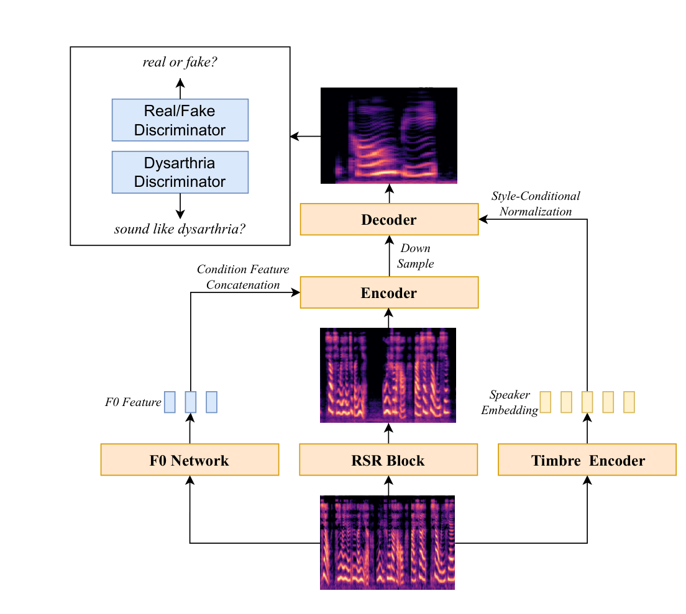
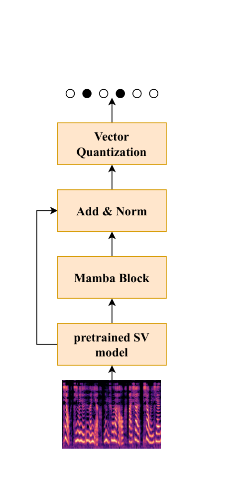
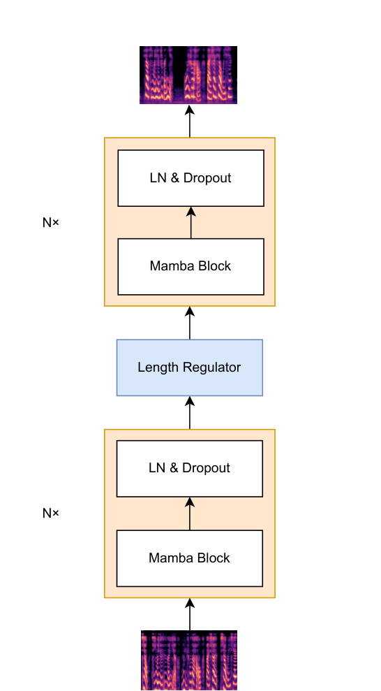

Overview
StarDSR transforms impaired dysarthric speech into clear, natural audio while preserving the speaker's own timbre — no healthy reference speech is needed at inference. The framework repurposes StarGANv2-VC into an identity-preserving restoration pipeline: a Mamba-based Rapid Spectrogram Refinement (RSR) block restores phonetic clarity with linear-time sequence modeling, a timbre encoder with vector quantization re-injects stable speaker identity, and a voiced-masked, log-domain F0 conditioning scheme corrects pitch instability through AdaIN-based decoding.



Results
| Model | 01 (mild) | 04 (moderate) | 06 (severe) | All |
|---|---|---|---|---|
| Original speech | 10.4% | 29.3% | 37.9% | 23.2% |
| Conformer (CDSD) | 11.6% | 27.0% | 37.1% | 30.2% |
| StarDSR (w/o RSR) | 12.7% | 31.7% | 39.5% | 26.1% |
| StarDSR | 9.8% | 25.9% | 27.8% | 18.1% |
| Model | Complexity | RTX 4090D | OrangePi |
|---|---|---|---|
| Transformer | O(L2) | 0.35 | 1.24 |
| Conformer | O(L2) | 0.38 | 1.45 |
| Paraformer | O(L) | 0.25 | 0.98 |
| StarDSR | O(L) | 0.21 | 0.92 |
| Model | 01 | 04 | 06 |
|---|---|---|---|
| Original speech | 3.49±0.11 | 2.78±0.12 | 3.11±0.14 |
| StarDSR (w/o RSR) | 3.34±0.23 | 3.05±0.18 | 2.97±0.11 |
| StarDSR (w/o F0) | 3.82±0.15 | 3.51±0.19 | 3.64±0.12 |
| StarDSR | 4.19±0.17 | 3.89±0.21 | 3.91±0.15 |
| Model | 01 | 04 | 06 |
|---|---|---|---|
| StarDSR (w/o F0+SE) | 2.37±0.11 | 2.46±0.10 | 2.77±0.16 |
| StarDSR (w/o F0) | 2.69±0.13 | 2.55±0.17 | 2.91±0.22 |
| StarDSR (w/o SE) | 2.82±0.09 | 2.47±0.12 | 2.89±0.17 |
| StarDSR (full) | 3.19±0.12 | 3.02±0.12 | 3.26±0.12 |
Across all dysarthric speakers, StarDSR reduces CER from 23.2% to 18.1%, runs in real time on both a server GPU (RTF 0.21) and an edge board (RTF 0.92), and achieves the highest naturalness MOS among compared systems — while ablations confirm that the RSR block drives naturalness and that both the speaker encoder and F0 conditioning preserve speaker identity.